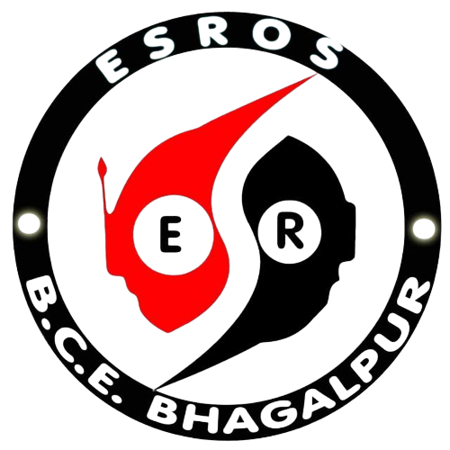
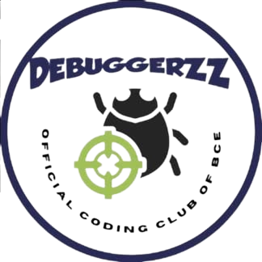
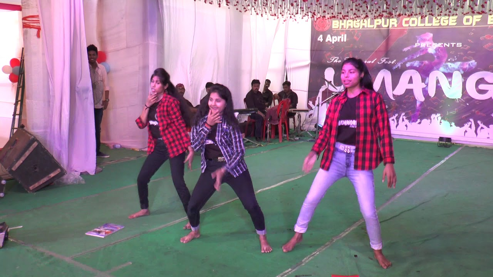

Esros
Robotics is the intersection of science, engineering and technology that produces machines, called robots, that replicate or substitute for human actions.
Debuggerzz
Debuggerezz is the official coding club of BCE Bhagalpur. It provides opportunity to students to learn coding and to compete with others in coding to improve coding skills.
Nukkar
.jpeg)
Its main aim is to go closer to those who have been marginalized by society and to convey the message through the direct and effective means of dramaturgy. It focuses on the social and political issues of people with an aim to create awareness among all the people.
Campus Tv & radio

Frontier is one of the club run byCTV members who not not shot the videos and photos but also collect the students and provide technological knowledge by guiding them in the feild like AutoCAD solidwork matlab photography videography and many other .
Dance Club
Dance team is a wonderful opportunity to continue doing something you love and to meet new people at the same time. It will help you develop new skills and strengths that can be translated into other genres. Teamwork will have a new definition. You will be a role model to future members and younger members.
Girls Coding
The Coding Club provides participating students an opportunity to learn the basics of computer programming in a team setting. The club's main focus is on creating applications, websites, games, stem/steam workshops, and other projects to share with LCC and the community